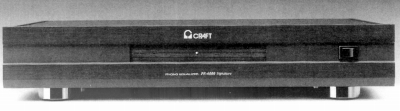
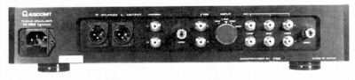

PE-6000 Signature


■価格
1,250,000円(MM・MCモデル）
■フォノイコライザーアンプ
■入力感度/インピーダンス MM 2.5mV/47KΩ
MC-LOW/MID/HIGH
2〜10Ω/10〜30Ω/25〜40Ω
■出力インピーダンス 100Ω(ノーマル/バランスド）
■利得 42dB（ノーマル）/42dB+6dB（バランス）
■SN比 90dB以上
■RIAA偏差 20〜20,000Hz(±0.3dB)
■入力換算雑音
■チャンネルセパレーション
■消費電力
■電源 AC100V
50/60Hz
■重量 12.0kg
■寸法 W43.0×H8.0×D31.0cm
■発売
1995年8月
■販売終了 1998年頃
■備考 価格は1995年頃のもの
MC対応は3種の独立巻線のトランスによる。
電源部にアイソレーション・レギュレター搭載。
VISHAYのK、Sシリーズの抵抗を採用。
バイパス不可。
入力/4系統切替、出力/2系統（平衡1/不平衡1）
他に受注生産のMM専門モデル(950,000円)あり。
なお1998年頃、PE-6000 SignatureがSignature Improvedになった際にMM専用型はそのまま残った。
オーディオクラフトのインデックスへ